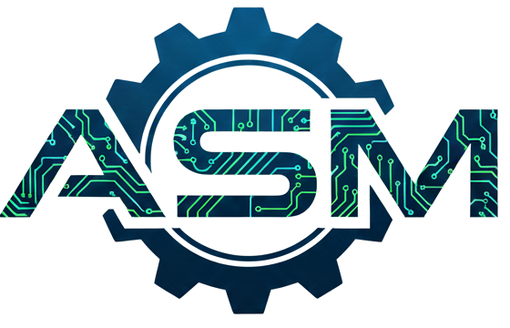

Automation Solutions Müller
Inh. Toni Müller · Dresden
Webseite im Aufbau
Hier entsteht der neue Internetauftritt. Bis dahin erreichen Sie mich gern direkt per Telefon oder E-Mail.

Inh. Toni Müller · Dresden
Hier entsteht der neue Internetauftritt. Bis dahin erreichen Sie mich gern direkt per Telefon oder E-Mail.